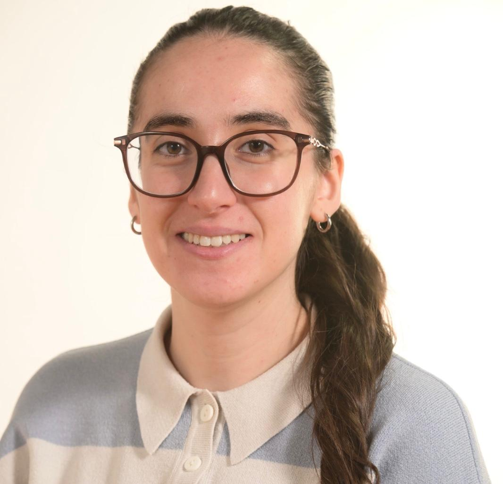

SAIDANI
Thaseda
Étudiante en Master 2 Big Data à l'IED Paris 8. Après un parcours en développement web, je me spécialise en data : traitement de données, machine learning et pipelines de données.

Thaseda SAIDANI
Juvisy-sur-Orge (91)
Profil
Diplômée d'un Bac+5 en systèmes d'information (reconnu niveau 7 ENIC-NARIC), je me spécialise aujourd'hui en Big Data à l'IED Paris 8, après un parcours en développement web. Curieuse de ce que les données peuvent révéler, je cherche un stage où apprendre auprès d'une équipe data, en travaillant sur des problèmes concrets.
Projets data
Prix de l'immobilier en France — pipeline de données
Récupère toutes les ventes immobilières publiées par l'État (données DVF), nettoie 20,5 millions de lignes avec PySpark en 11 minutes, calcule le prix au m² par commune et le rend consultable avec une API Flask.
Estimation du prix au m² — application web
Analyse de 756 communes françaises (données Kaggle), modèles de régression comparés, puis déploiement du meilleur modèle dans une application Flask : on saisit les caractéristiques d'une commune, l'application estime son prix au m².
Messagerie sécurisée (Master 1)
Application de messagerie avec une architecture modulaire, des APIs REST et une interface en React.js.
Architecture cloud hybride (projet de fin d'études)
APIs REST en Python (Flask), base NoSQL répliquée et conteneurisation des services avec Docker et Kubernetes.
Compétences
Données & Big Data
PySpark, SQL, PostgreSQL, MySQL, MongoDB
Data Science (en apprentissage)
pandas, scikit-learn, Matplotlib, Seaborn, Google Colab
Visualisation (en apprentissage)
Power BI : Power Query, table de dates, relations
Développement
Python, Flask, APIs REST, PHP (Laravel), JavaScript (React.js), HTML/CSS
Outils & DevOps
Docker, Kubernetes (bases), Linux, Git, GitHub, GitLab, Postman
Parcours
Master 2 Informatique, parcours Big Data
Université Paris 8 — IED
- Spark (MLlib, Delta), Databricks, NLP, IA générative, Kafka.
Développeuse web — Bénévolat
Association ATEEVA (à distance)
- Création et tests d'un site web et d'une interface de rédaction d'articles avec Wagtail (Python/Django).
Développeuse back-end — Bénévolat
AriMayi, Île-de-France
- Développement back-end en PHP (Laravel) et bases de données MySQL.
- Modélisation UML et BPMN, réunions Agile quotidiennes en équipe.
Master Ingénierie des SI et Licence Systèmes informatiques
Université Mouloud Mammeri, Algérie · Bac+5 reconnu niveau 7 (ENIC-NARIC)
- Projet de fin d'études : architecture cloud hybride (Flask, MongoDB, Docker, Kubernetes).
- Projets : sites de vente en ligne et d'agence de voyage (PHP, MySQL), messagerie (React.js), jeu vidéo 3D (Unity, C#).
Engagement
Association SAWA — Bénévolat
Logistique, coordination de la distribution d'urgence et aide humanitaire.
Contact
Je recherche un stage de fin d'études de 5 à 6 mois à partir de janvier 2027. Échangeons sur vos opportunités !